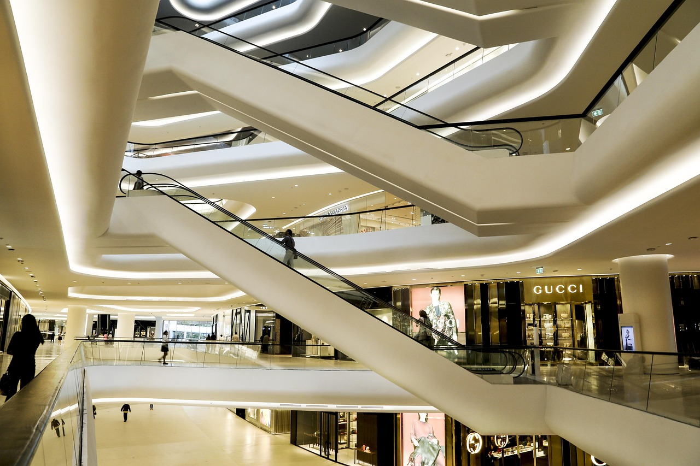

주제 아울렛 매장이 브랜드 이미지를 해치지 않는 이유 (evergreen / brand)
제목 후보
메타 설명 아울렛 매장이 브랜드 이미지를 해치지 않는 이유를 채널 분리 전략과 아울렛 전용 라인 구조로 분석한다.
라벨 아울렛, 브랜드이미지, 아울렛매장, 가성비소비, 브랜드전략, 리오프닝소비, 아울렛전용라인, 아울렛이월상품차이, 프리미엄아울렛, 명품아울렛없는이유, 채널분리전략
실용 자산 없음 (에세이형) — 브랜드 분석형 에세이 주제라 양식이나 체크리스트를 넣으면 글의 결이 깨진다
발행 전 팩트체크
이미지 (Blogger 편집기에 드래그해 넣으세요)

자주 가는 아울렛에 유니클로가 꽤 큰 매장으로 자리잡고 있다. 그 옆자리에 공사 가림막이 붙었다. 몇 주 뒤 가림막이 걷히자 나이키 팩토리 스토어가 들어섰다. 같은 건물 2층엔 폴로 랄프로렌, 코치, 마이클코어스가 나란히 있다. 이 브랜드들을 백화점 1층에서도 본 적 있고, 압구정 플래그십 매장에서도 본 적 있다. 그런데 이상하게, 아울렛에서 봐도 "싸구려 브랜드가 됐네"라는 생각은 들지 않는다. 오히려 "여기서 득템하면 운 좋은 거지"라는 쪽에 가깝다.
아울렛 매장은 브랜드 이미지를 해치지 않는다. 정확히는 해치지 않도록 브랜드가 설계해 놓았다. 이건 우연이 아니라 전략이다. 아울렛에 들어가는 순간부터 브랜드는 가격을 낮추되 이미지는 건드리지 않는 방식을 정교하게 짜 놓는다.
아울렛이란 정상가 판매 채널과 분리된 별도의 유통 채널로, 이월 재고나 아울렛 전용 상품을 정상가보다 낮은 가격에 판매하는 매장을 말한다. 여기서 핵심은 '분리'다. 아울렛은 백화점이나 플래그십 매장과 물리적으로도, 상품 구성에서도, 고객 동선에서도 철저히 나뉘어 있다.
내가 브랜드 마케팅 쪽 일을 할 때 가장 많이 들은 질문이 이거였다. "이 제품, 아울렛에도 풀 거예요?" 대답은 거의 항상 "아울렛엔 다른 라인으로 간다"였다. 소비자는 같은 브랜드라고 생각하지만, 실제로 손에 쥐는 건 다른 설계도로 만든 다른 제품인 경우가 많다.
아울렛 매장에 들어가 보면 입구 쪽과 안쪽 벽면의 분위기가 묘하게 다르다는 걸 느낄 때가 있다. 입구 가까운 쪽엔 비교적 신상에 가까운 상품과 로고가 큼직한 아이템이 걸려 있고, 안쪽으로 들어갈수록 세일 폭이 큰 상품이 쌓여 있다. 매대 높이도 다르다. 눈높이 선반엔 정가에서 20~30% 할인된 상품을, 하단 수레엔 그보다 훨씬 낮은 가격의 상품을 따로 분리해 놓는 식이다.
이건 우연히 그렇게 배치된 게 아니다. VMD(비주얼 머천다이징) 가이드라인에서부터 "아울렛 전용 레이아웃"이 따로 내려오는 경우가 많다. 백화점 매장의 쇼윈도가 '이 브랜드는 이런 세계관을 가지고 있다'를 보여주는 자리라면, 아울렛 매장의 입구는 '여기서도 브랜드다움은 유지된다'는 신호를 주는 자리다. 안쪽 할인 코너는 손님이 직접 뒤져서 발견하게 만든다. 발견했다는 느낌 자체가 할인의 만족감을 키운다.
아울렛 전용 라인이란 백화점이나 정규 매장에 유통된 적 없이, 처음부터 아울렛 판매만을 목적으로 기획·생산되는 제품군을 말한다. 코치, 랄프로렌, 마이클코어스 같은 미국 브랜드들은 아울렛 전용 라인의 비중이 상당히 높은 것으로 알려졌다. 원단을 한 단계 낮추거나, 봉제 방식을 단순화하거나, 로고 디테일을 줄이는 식이다.
이게 소비자 입장에서는 "속았다"는 느낌을 줄 수도 있지만, 브랜드 입장에서는 정반대다. 정상가 상품의 재고를 아울렛에 풀면 "저 브랜드 지금 안 팔리나 보다"는 인상을 주지만, 처음부터 아울렛용으로 설계한 제품을 팔면 "원래 이 가격대의 라인이 따로 있구나"로 읽힌다. 같은 로고를 달고도 전혀 다른 신호를 보내는 셈이다.
아울렛에서 옷을 사면 습관적으로 하는 행동이 있다. 안쪽 택을 뒤집어 품번을 확인하는 것이다. 품번 앞자리나 특정 알파벳 하나만 다른 경우가 많은데, 이게 바로 정규 라인과 아울렛 전용 라인을 가르는 표시다. 매장 직원에게 물어봐도 "이건 아울렛 전용이라 백화점엔 없는 상품이에요"라는 대답이 돌아올 때가 있다. 겉으로는 똑같아 보이는 셔츠 두 장이, 실은 태생부터 다른 제품인 셈이다.
이 작은 표시 하나가 브랜드 입장에서는 꽤 중요한 장치다. 정규 라인 고객이 혹시라도 "내가 산 게 아울렛 떨이구나"라고 느끼는 순간을 원천 차단하기 때문이다. 품번 체계는 소비자가 거의 들여다보지 않는 영역이지만, 바로 그 안 보이는 곳에서 브랜드의 가격 질서가 유지된다.
프리미엄 아울렛은 거의 예외 없이 도심에서 한 시간 이상 떨어진 곳에 있다. 여주, 파주, 이천의 프리미엄 아울렛을 떠올려 보면 바로 그림이 그려진다. 이건 땅값 때문만은 아니다. 베르사유 궁전이 파리 도심이 아니라 외곽에 지어진 이유 중 하나가 거리감을 통한 권위 유지였다는 건 역사에서 꽤 유명한 해석이다. 아울렛도 비슷한 원리로 움직인다. 일부러 찾아가야 하는 거리를 만들어 놓으면, 그 수고로움 자체가 '세일'이 주는 가벼움을 상쇄한다.
도심 한복판, 백화점 바로 옆에 같은 브랜드의 아울렛이 있다고 생각해보면 답이 나온다. 정상가 고객과 할인가 고객이 같은 골목에서 마주치는 순간, 정상가에 산 사람은 손해 본 기분이 든다. 브랜드가 가장 피하고 싶은 장면이 바로 이거다. 거리는 두 고객군이 서로의 존재를 모르게 하는 가장 효율적인 장치다.
넓은 주차장과 완만한 동선, 가족 단위로 하루를 보낼 수 있게 짜인 푸드코트도 같은 맥락이다. '세일하러 간다'가 아니라 '나들이 간다'는 기분이 들게 만드는 순간, 할인은 궁색함이 아니라 여유로 바뀐다.
예전에 신규 아울렛 오픈 준비를 도운 적이 있는데, 매장 직원 교육 자료가 백화점 매장용과 따로 있었다. 응대 멘트, 복장, 심지어 인사하는 톤까지 세세하게 지정돼 있었다. "할인 상품이라고 설명하지 말고 '이번 시즌 컬렉션'이라고 소개할 것" 같은 문구가 매뉴얼 한 줄에 박혀 있던 게 아직도 기억난다. 손님이 묻기 전에 먼저 "세일 상품이에요"라고 말하지 않는 것, 그게 원칙이었다.
이런 디테일은 고객이 의식적으로 눈치채지 못한다. 그런데 바로 그 눈치채지 못함이 브랜드 전략의 성공 지표다. 직원의 말투 하나까지 설계된 결과물이라는 걸 알면, 아울렛 매장을 보는 눈이 조금 달라진다.
에르메스나 샤넬 같은 브랜드는 아울렛을 운영하지 않는 것으로 알려졌다. 왜 그런지 살펴보면 이렇다. 이 브랜드들의 가치는 '희소성'에서 나오는데, 아울렛이라는 채널 자체가 "이 물건도 할인될 수 있다"는 메시지를 준다. 할인이 가능하다는 인식이 생기는 순간, 정상가 구매자는 다음 구매를 미루고 할인 타이밍을 기다리게 된다. 명품 브랜드가 가장 두려워하는 소비자 행동이 바로 이 '기다림'이다.
반면 유니클로, 나이키, 코치처럼 대중 소비재에 가까운 브랜드는 상황이 다르다. 이들의 매출 구조는 소량의 충성 고객이 아니라 대량의 반복 구매자에게서 나온다. 가격 저항선을 낮춰 더 많은 사람이 브랜드를 경험하게 하는 쪽이 장기적으로 이득이다. 아울렛이 브랜드 이미지를 해치지 않는 이유는, 애초에 그 브랜드가 희소성이 아니라 접근성으로 승부하는 구조이기 때문이다.
백화점 정기 세일과 아울렛을 같은 것으로 착각하는 경우가 많은데, 둘은 성격이 전혀 다르다. 정기 세일은 같은 매장, 같은 재고를 일시적으로 할인하는 '기간 한정' 이벤트다. 반면 아울렛은 상시 운영되는 '별도 채널'이다. 백화점 세일이 끝나면 가격은 다시 정가로 돌아가지만, 아울렛의 할인가는 애초에 그 매장의 정가다. 이 차이를 알면 아울렛에서 뭘 사야 할지 판단 기준이 생긴다.
개인적으로는 아울렛에 갈 때 이월 재고 코너를 먼저 둘러보는 편이다. 전용 라인보다 소재나 디테일이 정규 라인과 동일한 경우가 많아서다. 반대로 전용 라인은 가격이 싼 만큼 품질을 꼼꼼히 봐야 한다는 게, 매장을 숱하게 돌아본 뒤에 생긴 나름의 요령이다.
채널 분리 전략이란 같은 브랜드가 고객군에 따라 다른 유통 채널, 다른 가격, 다른 제품으로 접근하는 전략을 말한다. 백화점에서는 신상품과 정상가를, 아울렛에서는 이월 재고와 전용 라인을, 온라인 아울렛에서는 또 다른 할인율을 적용하는 식이다. 이렇게 나누는 건 가격표 하나로는 지불 의사가 서로 다른 고객들을 전부 만족시킬 수 없어서다.
회의실에서 이 전략을 짤 때 제일 많이 나온 말이 "이 두 그룹이 절대 만나면 안 된다"였다. 백화점 매니저와 아울렛 매니저가 서로 다른 KPI를 받고, 서로 다른 시즌 상품을 받는 것도 같은 이유다. 아울렛은 브랜드 입장에서 '버리는 채널'이 아니라 '가격에 민감한 고객을 흡수하는 별도의 채널'이다. 설계부터 다르게 시작한다.
그래서 아울렛에서 뭔가를 샀을 때 괜히 주눅들 필요가 없다. 아울렛 전용 라인이라고 해서 품질이 터무니없이 떨어지는 것도 아니고, 이월 재고라고 해서 하자가 있는 것도 아니다. 브랜드는 아울렛 채널에서도 최소한의 품질 기준을 지키려 한다. 거기서 신뢰가 무너지면 전체 브랜드가 흔들리기 때문이다.
씁쓸하면서도 꽤 인상적인 건, 소비자는 이 모든 설계를 거의 눈치채지 못한 채 "이득 봤다"는 기분으로 매장을 나선다는 점이다. 브랜드는 이미지를 지켰고, 소비자는 만족했고, 아무도 손해 본 사람이 없는 것처럼 보인다. 사실은 처음부터 그렇게 되도록 설계된 결과다. 아울렛은 브랜드의 뒷문이 아니라 미리 설계된 옆문이다. 브랜드가 지키는 건 가격이 아니라 만나는 순서다.
Q. 아울렛에서 산 제품, 백화점 정상가 제품과 비교해본 적 있으신가요?